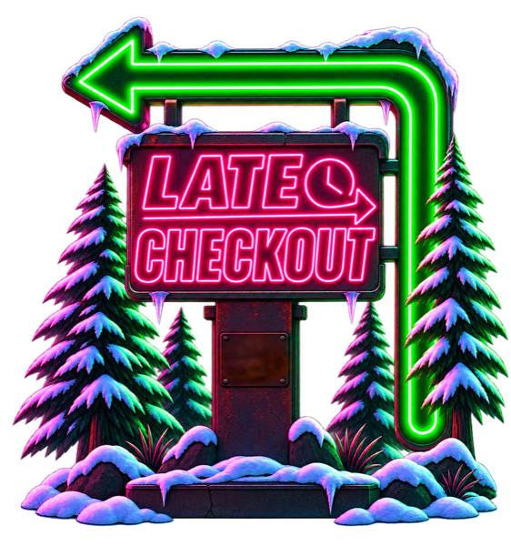
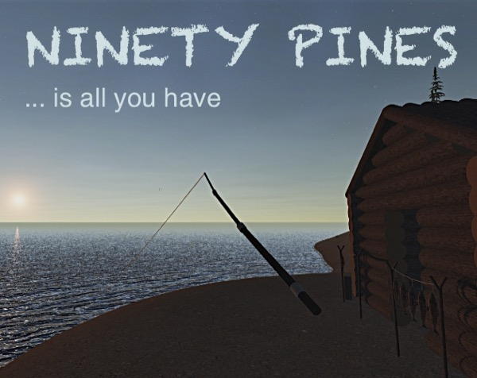
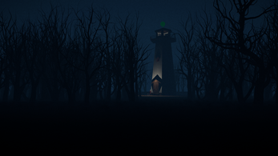
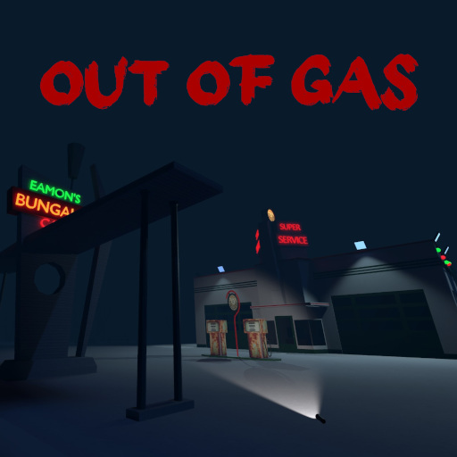

01About
Ninety Pines makes small games — mostly horror, sometimes not, in whatever art style the idea asks for.
One person, everything in-house. Prototype in a week, ship it or bury it.
02Games

Late Checkout
Winter 1999. A roadside motel cut off by a blizzard, a night shift, and a notebook of chores: clean the rooms, drink the coffee, pet the motel cat. Then the lights go out and the routine turns into something else.
A flashlight, a cat, and three endings to this night.
▶ Steam
Ninety Pines
Your plane went down in the open ocean. You wake up on a small island with an axe, a knife and a piece of paracord — and ninety trees between you and hunger, cold and exhaustion. Permadeath, about half an hour a run.
▶ Download
Whispers of Darkwater Lake
An evacuated lake town overrun by something grotesque. Atmospheric survival around a forlorn lighthouse, about half an hour in the dark.
The creatures are afraid of glowsticks. Yes, you read that right.
▶ Download
Out Of Gas
One road, one tank, and it never stops draining. Keep the car moving and try not to look too long at what stands between the trees.
▶ Play ▼ DownloadMedieval Drift
Drifting, but on a horse. Hold the slide through the turns of a tile-built medieval town and bank points before the timer runs out.
▶ Play03What We Do
- Game design and rapid prototyping — horror, arcade, experimental
- Unity / C# gameplay, AI and tools programming
- Art direction from PSX low-poly to clean modern
- Builds for PC, mobile and the browser
- Turning jam prototypes into finished small games
- Contract work: gameplay systems, UI, engine glue